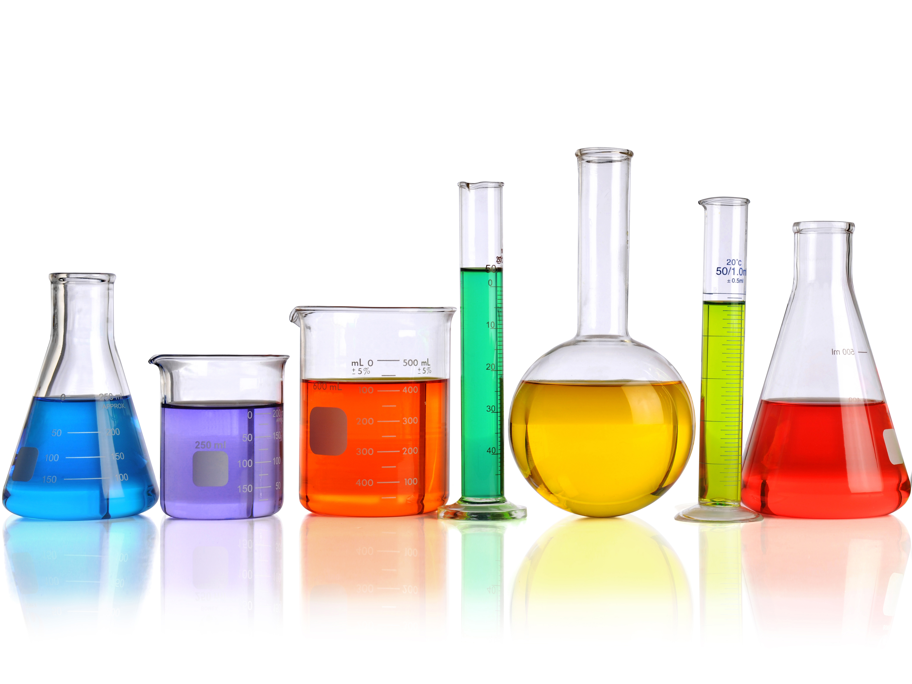

Chemistry is the scientific discipline involved with compounds composed of atoms, i.e. elements, and molecules, i.e. combinations of atoms: their composition, structure, properties, behavior and the changes they undergo during a reaction with other compounds.[1][2] Chemistry addresses topics such as how atoms and molecules interact via chemical bonds to form new chemical compounds. There are four types of chemical bonds: covalent bonds, in which compounds share one or more electron(s); ionic bonds, in which a compound donates one or more electrons to another compound to produce ions: cations and anions; hydrogen bonds; and Van der Waals force bonds.
Chemistry occupies an intermediate position in a hierarchy of the sciences by reductive level between physics and biology.[3] It is sometimes called the central science because it provides a foundation for understanding both basic and applied scientific disciplines at a fundamental level.[4] Examples include plant chemistry (botany), the formation of igneous rocks (geology), how atmospheric ozone is formed and how environmental pollutants are degraded (ecology), the properties of the soil on the moon (astrophysics), how medications work (pharmacology), and how to collect DNA evidence at a crime scene (forensics).
The history of chemistry represents a time span from ancient history to the present. By 1000 BC, civilizations used technologies that would eventually form the basis of the various branches of chemistry. Examples include extracting metals from ores, making pottery and glazes, fermenting beer and wine, extracting chemicals from plants for medicine and perfume, rendering fat into soap, making glass, and making alloys like bronze. The protoscience of chemistry, alchemy, was unsuccessful in explaining the nature of matter and its transformations. However, by performing experiments and recording the results, alchemists set the stage for modern chemistry. The distinction began to emerge when a clear differentiation was made between chemistry and alchemy by Robert Boyle in his work The Sceptical Chymist (1661). While both alchemy and chemistry are concerned with matter and its transformations, chemists are seen as applying scientific method to their work. Chemistry is considered to have become an established science with the work of Antoine Lavoisier, who developed a law of conservation of mass that demanded careful measurement and quantitative observations of chemical phenomena. The history of chemistry is intertwined with the history of thermodynamics, especially through the work of Willard Gibbs.[5] Chemistry was preceded by its protoscience, alchemy, which is an intuitive but non-scientific approach to understanding the elements, compounds, and their interactions. It was unsuccessful in explaining the nature of matter and its transformations, but by performing experiments and recording the results, alchemists set the stage for modern chemistry. The distinction began to emerge when a clear differentiation between alchemy and chemistry was made by Robert Boyle in 1661: the application of the scientific method in chemistry was the crucial difference. DOWNLOAD THE COMPLETE INFO